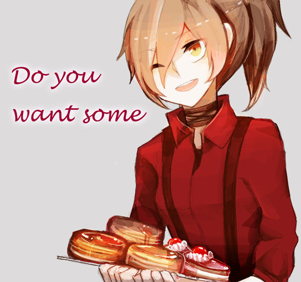

第二幕 ・ 蜂毒
02

「親愛的貴賓，想要來塊蛋糕或者淋滿蜂蜜的熱騰騰鬆餅嗎？」
她束起以往垂在身後的亞麻色髮絲，近似蜂蜜色澤的眸子眨呀眨地望著對方。
今天，對玖氏家族來說是特別的。
「好的，小心不要被燙著了呢。」楚歌微笑地將幾片鬆餅夾入來賓的盤中。
輕快的音樂轉啊轉的，人們愉快地交談。
……至少，對於那個傢伙來說今天是特別的。
楚歌邊這樣想著，視線飄向站在門口，緊張到直挺挺站著的鏡雲。
……還沒曾見過她這副模樣，平常都一臉鄙視的看著人，今天卻像極了出嫁的小女孩呢。
「真稀奇。」自語喃喃，楚歌止不住地勾起嘴角。
據她幾天前自珀香所述，今天將舉辦玖氏家族重大的晚宴。
——晝行晚宴。
如名，邀請對象大多是晝行者。
晚宴定期舉辦在玖氏主家院中鳶尾花盛開之時，主家將發出通知至各個輔家，並在時間內將晚宴所需的物品提早準備好。
入場資格，是當場完成記憶注入的銀製尾戒。
用途、原因，或許是玖氏的奇怪興趣，又或許對他們而言這東西另有意義，這都無從得知。
晚宴雖亦允許夜居者參加，但參加的多是貴族、或者是與玖氏關係友好的富裕人家。
在晚宴中若雙方達成約定，將獲得長期任務委託、亦或是較為簡單的工作。
而對晝行者而言，除了工作以外，他們也能夠獲得與玖氏家族、亦或其餘貴族夜居的聯絡的管道……
當然，並不是面對面。
後續的聯絡工作，須交由『輔家』來執行。
……當然那些都是舞會結束後的事了。
- 無論夜居者或晝行者，歡迎一同來共襄盛歡 -
唯一清楚的是這樣一則訊息，以及在晚宴中能夠各取所需，並能盡情享用供之不竭的餐點、精彩的表演、以及最重要的——人與人之間的情報。
「這麼想，就覺得有趣不起來呢……」楚歌揚起嘴角，端著甜點盤朝鏡雲——大門口的方向——走去。
總之，來好好地迎接貴賓吧。
晝行晚宴就在永夜盛大地拉開序幕—--
「歡迎蒞臨，願有個愉快的夜晚。」
……別接受不明白的邀約，成為狼的客人囉。